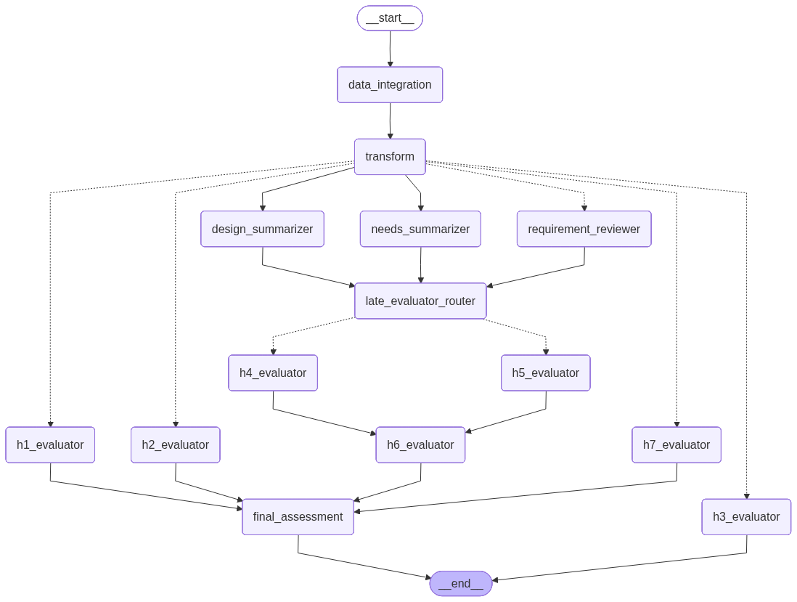

Hazard Risk Reviewer
What it checks & how
The Hazard Risk Reviewer evaluates a single hazard record from a Software
Hazard Analysis (SHA) and asks whether its traced requirements, test cases, and
design controls provide reasonable assurance of safety against
that hazard, per ISO 14971 / IEC 62304. It applies a seven-dimension
rubric (H1–H6 mandatory + R7 recommended) and emits a binary Yes/No overall_verdict computed
deterministically from the seven findings.
Its defining feature: for every requirement traced from the hazard, it invokes the entire Test Suite (RTM) reviewer as a subgraph — so each risk-control requirement gets a full coverage review, and those results feed the risk-control / verification dimensions.
Inputs required
The graph state is HazardReviewState
hazard_risk_reviewer/core.py. The API parses an uploaded
SHA Excel file into one HazardRowWithTraceMatrix per row:
| Field | Type | Required | Meaning |
|---|---|---|---|
hazard | HazardRowWithTraceMatrix | Yes | The SHA row (hazard, hazardous situation, causes, pre/post-mitigation risk, controls) plus its trace matrix. hazard_id is the cache partition. |
↳ requirements_traceability | HazardTraceMatrix | — | Traced requirements, test_cases, design_docs, user_needs, system_requirements. |
cache_mode | "off" | "on" | "test" | Optional | Per-run cache behaviour; defaults to on (legacy partial→on, full→test still accepted). |
pyjama_request | PyJamaRequest | Optional | When present, a JAMA bidirectional_trace fetch merges traceability onto the row; absent → Excel-only. |
API form fields: project_name, the .xlsx file,
sheet_name (default SHA Table),
identifier_pattern (default GID-\d+; passed to the loader as
extract_gids_format), cache_mode, use_cache,
test_mode, and include_edge_case_analysis.
Graph topology

HazardReviewerRunnable graph. H1/R7 run early; H2/H3 dispatch off the design summarizer; H4/H5 after the requirement reviews + summaries; H6 after H4/H5; the final assessor joins all seven. The ASCII below is authoritative; the rendered PNG is regenerated separately (follow-up).START
-> data_integration -> transform -> validation_gate (skip -> END when required SHA fields are missing)
-> work_router
|-- dispatch_hazard_evaluators_early --> [ h1 | r7 ] (need only hazard fields)
|-- dispatch_requirement_reviews -- Send xN --> requirement_reviewer (each runs the RTM subgraph)
|-- design_summarizer (parallel)
|-- needs_summarizer (parallel)
design_summarizer -- dispatch_hazard_evaluators_design --> [ h2 | h3 ] (consume summarized_designs)
[ requirement_reviewer | design_summarizer | needs_summarizer ]
\--> late_evaluator_router
-- dispatch_hazard_evaluators_late --> [ h4 | h5 ] (parallel)
\--> h6_evaluator (waits for h4 + h5; H3 finding arrives via reducer)
-> final_assessment (joins h1, h2, h6, r7; H3/H4/H5 already reduced) -> ENDFindings accumulate into hazard_findings via an
Annotated[List[HazardFinding], operator.add] reducer; per-requirement
RTM results accumulate into requirement_reviews the same way.
hazard_risk_reviewer/pipeline.py
Why the graph is staged by data dependency
- H1, R7 only read hazard fields, so they fire immediately from
work_router, in parallel with the requirement reviews and summarizers. - H2 (software contribution) and H3 (pre-mitigation risk)
reason over the summarized design controls, so they dispatch off
design_summarizeronce it completes — not fromwork_router. - H4 (risk-control coverage) and H5 (verification
depth) need the per-requirement RTM results and the design/needs
summaries, so they wait behind
late_evaluator_router(which joinsrequirement_reviewer+ both summarizers). - H6 (residual-risk closure) depends on H3, H4, H5. It is wired
only behind H4+H5 (same superstep); H3's finding is already in the reducer by then
(H3 runs no later than
late_evaluator_router), so no direct H3→H6 edge is needed (one would fire H6 a superstep early). - final_assessment waits for all seven findings.
Embedded RTM subgraph
RequirementReviewerNode wraps a compiled
RTMReviewerRunnable and invokes it once per traced requirement
(fanned out via Send). The whole RTM result is cached as one blob
keyed on req_id — so a requirement appearing in several hazard rows is
reviewed at most once per prompt version. The embedded RTM is itself uncached
internally; only the blob is cached.
Nodes & prompts
| Node | Class | Prompt role | Does | Output |
|---|---|---|---|---|
data_integration / transform | DataIntegrationNode / fn | — | Optional JAMA bidirectional-trace fetch + merge onto the hazard (no-ops for Excel-only rows). | state fields |
h1_evaluator | HazardEvaluatorNode | hazard_h1 | Hazard record completeness & semantic integrity. | HazardFinding |
h2_evaluator | HazardEvaluatorNode | hazard_h2 | Software contribution & cause coverage. | HazardFinding |
h3_evaluator | HazardEvaluatorNode | hazard_h3 | Pre-mitigation risk & exploitability characterization. | HazardFinding |
requirement_reviewer | RequirementReviewerNode | (RTM subgraph) | Runs the full RTM reviewer per traced requirement; cached per req_id. | RequirementReview[] |
design_summarizer | HazardDesignSummarizerNode (Batched) | hazard_design_summarizer | Summarizes design controls. | HazardSummarizedDesignSpec[] |
needs_summarizer | HazardNeedsSummarizerNode (Batched) | hazard_needs_summarizer | Summarizes user needs. | HazardSummarizedUserNeed[] |
h4_evaluator | HazardEvaluatorNode | hazard_h4 | Risk-control identification, allocation & coverage (uses req-reviews + designs). | HazardFinding |
h5_evaluator | HazardEvaluatorNode | hazard_h5 | Verification depth & hazard-path effectiveness. N-A when there is no software cause. | HazardFinding |
h6_evaluator | H6EvaluatorNode | hazard_h6 | Residual-risk closure & acceptability (joins H3/H4/H5). | HazardFinding |
r7_evaluator | HazardEvaluatorNode | hazard_r7 | HSHA update & newly identified hazard capture (recommended; non-gating). | HazardFinding |
final_assessment | _FinalAssessorNode (final) | hazard_final_assessor | Assembles the seven findings; the verdict is computed in code, the LLM writes the prose. | HazardAssessment |
Rubric — H1–H6 (mandatory) + R7 (recommended)
| Code | Dimension | Verdict | N-A rule |
|---|---|---|---|
| H1 | Hazard record completeness & semantic integrity | Yes / No | — |
| H2 | Software contribution & cause coverage | Yes / No | — |
| H3 | Pre-mitigation risk & exploitability characterization | Yes / No | — |
| H4 | Risk-control identification, allocation & coverage | Yes / No | — |
| H5 | Verification depth & hazard-path effectiveness | Yes / No / N-A | N-A when software_related_causes is empty (no software contribution). |
| H6 | Residual-risk closure & acceptability decision | Yes / No | — |
| R7 (recommended) | HSHA update & newly identified hazard capture | Yes / No | Recommended only — excluded from overall_verdict. |
Verdict logic
The final_assessment node returns exactly seven
HazardFinding items (H1–H6 mandatory + R7 recommended). The verdict is computed
deterministically in code, not by the LLM:
overall_verdict is Yes iff every mandatory
finding (H1–H6) verdict is in {Yes, N-A}, else No.
R7 is recommended only and is excluded from the verdict — an R7 = No
never flips it (mirrors the RTM reviewer's R6 advisory criterion). The LLM is used only to write
the accompanying comments and clarification_questions; if
the prose call fails, the deterministic assessment is still produced.
hazard_risk_reviewer/nodes.py
Caching & prompt sets
The hazard reviewer's own nodes (H1–H6, R7, summarizers) and the per-requirement
RTM blobs use the shared ReviewCacheManager — the H-nodes partition by
hazard_id (HAZ-*), the RTM blobs by req_id
(REQ-*).
include_edge_case_analysis is ON the embedded RTM (and the RTM blob
cache) use test_suite_reviewer_v4; OFF uses
test_suite_reviewer_v3. The prompt-set name is folded into the cache
key, so v3 and v4 hazard runs never reuse each other's RTM blobs even though their
synthesizer version is identical. Two hazard graphs (one per set) are pre-compiled
at startup and selected per request.Output
The endpoint returns a self-contained HTML viewer rendered from
outputs.jsonl, one record per hazard row, showing the H1–H6 + R7 rubric,
the per-requirement RTM reviews, and the deterministic overall verdict.